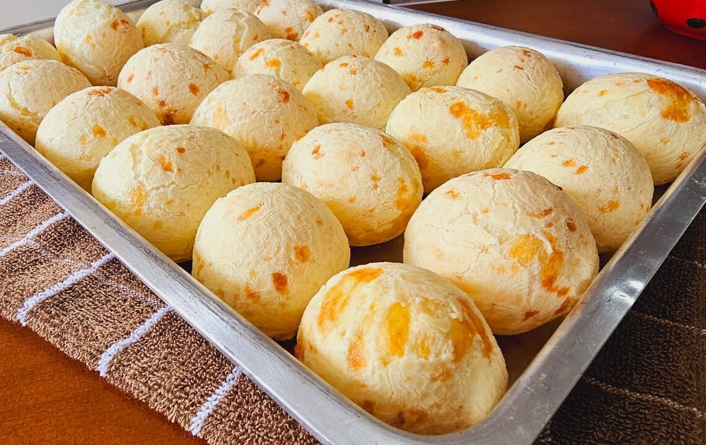

Receitas de Minas
Pão de queijo

ver segredo do chef
jamais coloque os ovos com a massa quente, senão eles cozinham e o pão não cresce.
INGREDIENTES
1 ovo inteiro
1 colher (café) de sal
1 xícara (chá) de leite
1 xícara (chá) de queijo minas meia cura ralado
1 xícara (chá) de polvilho azedo
MODO DE PREPARO
Em uma vasilha, misture todos os ingredientes, menos o leite.
Em seguida, vá adicionando o leite aos poucos, até que a massa fique homogênea.
Modele os pães e coloque-os em forma untada com óleo.
Levar ao forno pré aquecido por 40 minutos ou até dourar.
Suas anotações
PORÇÕES
Serve 15 pessoas
TEMPO DE PREPARO
50 minutos